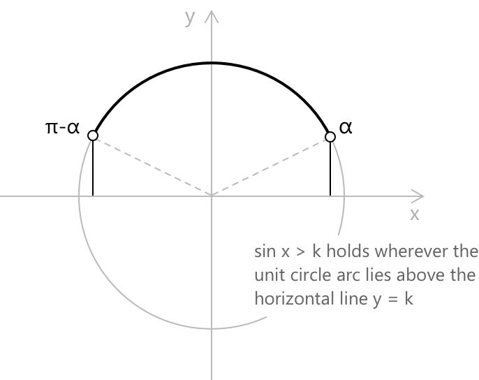
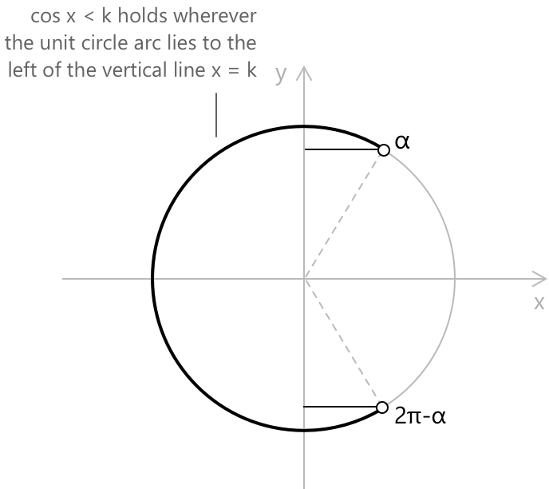
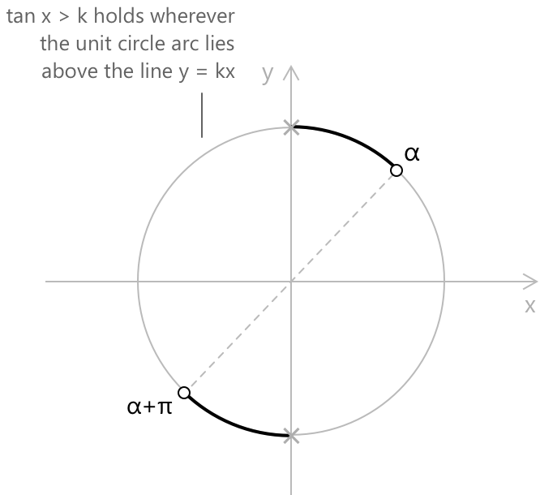

Тригонометричні нерівності
Вступ
Тригонометрична нерівність — це нерівність, у якій невідома змінна виступає як аргумент однієї або кількох тригонометричних функцій. На відміну від алгебраїчних нерівностей, множина розв'язків зазвичай є нескінченним об'єднанням проміжків, що є наслідком періодичної природи відповідних функцій. На цій сторінці розглянуто три фундаментальні випадки з синусом і косинусом, а також тангенсом, після чого досліджено, як складніші вирази можуть бути зведені до цих стандартних форм.
Метод розв'язання тригонометричних нерівностей ґрунтується на геометричній інтерпретації одиничного кола. Нагадаємо, що \(\sin x\) відповідає вертикальній координаті, а \(\cos x\) — горизонтальній координаті точки, визначеної кутом \(x\) на одиничному колі.

-
Вертикальний відрізок \( \overline{PR} \) визначено як синус кута \( \theta \).
-
Горизонтальний відрізок \( \overline{OR} \) визначено як косинус кута \( \theta \).
-
Вертикальний відрізок \( \overline{ST} \) визначено як тангенс кута \( \theta \).
Визначення того, де ці координати більші або менші за задане значення, становить геометричний підхід до розв'язання таких нерівностей. Оскільки синус і косинус є періодичними з періодом \(2\pi\), а тангенс — з періодом \(\pi\), розв'язки, знайдені в межах одного періоду, мають бути узагальнені на всю дійсну пряму шляхом додавання цілих кратних значень відповідного періоду.
Нерівності з синусом
Розглянемо нерівність такого вигляду, де \(k\) — дійсна стала, така що \(|k| \leq 1\).
\[\sin x > k\]
Першим кроком є знаходження опорного кута \(\alpha = \arcsin k\), який лежить у \([-\pi/2,\, \pi/2]\). На одиничному колі умова \(\sin x > k\) виконується на дузі, де вертикальна координата перевищує \(k\). Ця дуга йде проти годинникової стрілки від \(\alpha\) до \(\pi - \alpha\).

Отже, розв'язком у межах одного періоду є відкритий проміжок \((\alpha,\, \pi - \alpha)\), а загальним розв'язком на \(\mathbb{R}\) є наступне:
\[\alpha + 2k\pi < x < \pi – \alpha + 2k\pi \] \[k \in \mathbb{Z}\]
Для нестрогої версії \(\sin x \geq k\) кінцеві точки включаються, і проміжки стають замкненими.
- Якщо \(k > 1\), нерівність не має розв'язків, оскільки \(\sin x \leq 1\) для всіх \(x\).
- Якщо \(k < -1\), нерівність виконується для будь-якого дійсного числа.
Наприклад, знайдіть усі дійсні розв'язки наступної нерівності:
\[\sin x > \frac{\sqrt{3}}{2}\]
Опорний кут становить \(\arcsin(\sqrt{3}/2) = \pi/3\). Оскільки функція синуса перевищує \(\sqrt{3}/2\) на дузі між \(\pi/3\) та \(\pi - \pi/3 = 2\pi/3\), загальним розв'язком є:
\[\frac{\pi}{3} + 2k\pi < x < \frac{2\pi}{3} + 2k\pi\] \[k \in \mathbb{Z}\]
Практичне зауваження: розв'язання тригонометричних нерівностей у закритій формі вимагає знання головних значень синуса та косинуса для стандартних кутів \(\pi/6\), \(\pi/4\), \(\pi/3\) та \(\pi/2\). Без цього перехід від \(\arcsin(\sqrt{3}/2)\) до \(\pi/3\) не буде миттєвим.
Нерівності з косинусом
Нерівність такого вигляду розв'язується аналогічно, хоча відповідна дуга на одиничному колі тепер симетрична відносно горизонтальної осі.
\[\cos x < k\]
Нехай \(\alpha = \arccos k \in [0,\, \pi]\). Умова \(\cos x < k\) виконується там, де горизонтальна координата точки одиничного кола менша за \(k\). Це відбувається на дузі, що йде від \(\alpha\) до \(2\pi - \alpha\) (еквівалентно, від \(\alpha\) до \(-\alpha\), рухаючись за годинниковою стрілкою через \(\pi\)).

Загальне розв'язання записується наступним чином:
\[\alpha + 2k\pi < x < 2\pi – \alpha + 2k\pi\] \[k \in \mathbb{Z}\]
Еквівалентна і часто більш компактна форма використовує симетричний проміжок навколо \(\pi\).
Наприклад, визначте множину розв'язків наступної нерівності:
\[\cos x \leq -\frac{1}{2}\]
Допоміжний кут становить \(\arccos(-1/2) = 2\pi/3\). Оскільки нерівність не є строгою, розв'язком у кожному періоді є замкнений проміжок \([2\pi/3,\, 4\pi/3]\), а загальне розв'язання на \(\mathbb{R}\) є наступним.
\[\frac{2\pi}{3} + 2k\pi \leq x \leq \frac{4\pi}{3} + 2k\pi\] \[k \in \mathbb{Z}\]
Як і у випадку з синусом, розглянутому вище, розв'язування нерівностей з косинусом у замкненій формі вимагає знання головних значень косинуса для стандартних кутів \(\pi/6\), \(\pi/4\), \(\pi/3\) та \(\pi/2\). Без цього перехід від \(\arccos(-1/2)\) до \(2\pi/3\) не буде миттєвим.
Нерівності з тангенсом
Функція тангенс має період \(\pi\) і є строго зростаючою на кожному проміжку вигляду \((-\pi/2 + k\pi,\, \pi/2 + k\pi)\). Ця монотонність значно спрощує аналіз: у кожному такому проміжку нерівність \(\tan x > k\) зводиться до простого порівняння з допоміжним кутом \(\arctan k\).

Розглянемо наступну нерівність:
\[\tan x > k\]
Загальне розв'язання:
\[\arctan k + n\pi < x < \frac{\pi}{2} + n\pi\] \[n \in \mathbb{Z}\]
Верхня межа \(\pi/2 + n\pi\) є вертикальною асимптотою і, відповідно, завжди виключається, незалежно від того, чи є нерівність строгою.
Наприклад, розв'яжіть наступну нерівність:
\[\tan x \leq -1\]
Допоміжний кут становить \(\arctan(-1) = -\pi/4\). Оскільки тангенс зростає на кожній гілці, умова \(\tan x \leq -1\) виконується від лівої кінцевої точки кожної гілки до \(-\pi/4\) включно. Загальне розв'язання є наступним.
\[-\frac{\pi}{2} + n\pi < x \leq -\frac{\pi}{4} + n\pi\] \[n \in \mathbb{Z}\]
Ліва кінцева точка виключається, оскільки функція тангенс там не визначена.
Зводимі нерівності
Багато тригонометричних нерівностей не мають стандартного вигляду, але можуть бути зведені до одного з наведених вище випадків за допомогою алгебраїчних перетворень або застосування тригонометричних тотожностей.
Розглянемо наступну нерівність, отриману шляхом ізоляції функції синуса від лінійного виразу.
\[2\sin x - \sqrt{2} \geq 0\]
Ізоляція функції синуса дає \(\sin x \geq \sqrt{2}/2\). Тепер вона має стандартний вигляд із \(k = \sqrt{2}/2\) та опорним кутом \(\pi/4\), отже, загальний розв'язок є наступним.
\[\frac{\pi}{4} + 2k\pi \leq x \leq \frac{3\pi}{4} + 2k\pi\] \[k \in \mathbb{Z}\]
Другий клас зводимих нерівностей виникає, коли аргументом тригонометричної функції є не просто \(x\), а лінійний вираз від \(x\). Розглянемо наступну нерівність:
\[\sin\!\left(2x - \frac{\pi}{3}\right) > \frac{1}{2}\]
Запровадивши заміну \(t = 2x - \pi/3\), нерівність набуває вигляду:
\[\sin t > 1/2\]
Розв'язанням є:
\[\pi/6 + 2k\pi < t < 5\pi/6 + 2k\pi\]
Повертаючись до заміни та розв'язуючи відносно \(x\): оскільки \(t = 2x - \pi/3\), ми можемо записати:
\[\pi/6 + 2k\pi < 2x – \pi/3 < 5\pi/6 + 2k\pi\]
Додавання \(\pi/3\) до всіх частин дає:
\[\pi/2 + 2k\pi < 2x < 7\pi/6 + 2k\pi\]
Ділення кожного члена на 2, оскільки всі вирази масштабуються однорідно без зміни напрямку нерівностей, дозволяє отримати наступне.
\[\frac{\pi}{4} + k\pi < x < \frac{7\pi}{12} + k\pi\] \[k \in \mathbb{Z}\]
Третій метод зведення застосовується, коли нерівність є квадратичною відносно тригонометричної функції. Розглянемо наступне:
\[2\cos^2 x - \cos x – 1 > 0\]
Поклавши \(u = \cos x\), це стає квадратною нерівністю: \[2u^2 - u - 1 > 0\]
Розкладання на множники дає \((2u + 1)(u - 1) > 0\), що виконується, коли \(u < -1/2\) або \(u > 1\). Оскільки \(\cos x \leq 1\) для всіх дійсних \(x\), умова \(\cos x > 1\) ніколи не виконується.
Отже, нерівність зводиться до \(\cos x < -1/2\), що є стандартним випадком для косинуса з опорним кутом \(2\pi/3\), що дає наступне.
\[\frac{2\pi}{3} + 2k\pi < x < \frac{4\pi}{3} + 2k\pi\] \[k \in \mathbb{Z}\]
Приклад 1
Більш складне зведення виникає, коли нерівність містить і \(\sin x\), і \(\cos^2 x\), що робить пряму заміну неможливою без попереднього застосування тригонометричної тотожності. Розглянемо наступні рівняння:
\[\cos^2 x - \sin x – 1 > 0\]
Наявність одночасно \(\cos^2 x\) та \(\sin x\) перешкоджає негайній заміні. Заміна \(\cos^2 x\) на \(1 - \sin^2 x\) за допомогою основної тригонометричної тотожності зводить вираз до однієї тригонометричної функції. Нерівність набуває наступного вигляду.
\[1 – \sin^2 x - \sin x – 1 > 0\]
Спрощуючи, отримаємо \(-\sin^2 x - \sin x > 0\), або еквівалентно \(\sin^2 x + \sin x < 0\). Поклавши \(u = \sin x\), отримаємо:
\[u^2 + u < 0\]
що розкладається на множники як: \[u(u + 1) < 0\]
Це виконується, коли \(-1 < u < 0\), тобто, коли \(-1 < \sin x < 0\). Оскільки граничні значення \(u = 0\) та \(u = -1\) виключені, розв'язком протягом одного періоду є відкритий проміжок \((\pi, 2\pi)\) із збереженням кінцевої точки \(x = 3\pi/2\), за винятком того, що \(\sin(3\pi/2) = -1\) виключається через строгу нерівність.
Отже, загальний розв'язок є наступним.
\[\pi + 2k\pi < x < 2\pi + 2k\pi, \quad k \in \mathbb{Z}\]
Приклад 2
Більш складний випадок виникає, коли жодне з трьох стандартних спрощень не застосовується окремо. Розглянемо нерівність нижче, яка потребує як заміни, так і кроку розкладання на множники квадратного тричлена перед приведенням до стандартного вигляду:
\[\sin^2 x - \sin x \cdot \cos x < 0\]
Розклавши ліву частину безпосередньо на множники, отримаємо наступне:
\[\sin x (\sin x – \cos x) < 0\]
Цей вираз містить добуток двох множників, кожен з яких залежить від \(x\), тому ні проста заміна, ні усунення тотожності не є одразу застосовними. Ділення обох частин на \(\cos^2 x\) ввело б тангенс, але також вимагало б відстеження знака \(\cos^2 x\), який завжди є невипадковою від'ємною величиною і перетворюється на нуль в асимптотах.
Більш чистим підходом є ділення на \(\cos^2 x > 0\) на кожному проміжку, де косинус не перетворюється на нуль, що не змінює напрямку нерівності, і переписування виразу через \(\tan x.\)
Діливши на \(\cos^2 x\), нерівність набуває такого вигляду.
\[\frac{\sin x}{\cos x}\left(\frac{\sin x}{\cos x} - 1\right) < 0\]
Поклавши \(u = \tan x\), це зводиться до алгебраїчної нерівності \(u(u - 1) < 0\), яка виконується, коли \(0 < u < 1\), тобто, коли \(0 < \tan x < 1\). Тепер це система з двох стандартних нерівностей для тангенса, які слід розв'язати одночасно в кожній гілці функції тангенса. Нерівність \(\tan x > 0\) виконується на наступному проміжку:
\[(0 + n\pi,\, \tfrac{\pi}{2} + n\pi)\]
Нерівність \(\tan x < 1\) виконується на наступному проміжку:
\[(-\tfrac{\pi}{2} + n\pi,\, \tfrac{\pi}{4} + n\pi)\]
Знаходячи перетин у кожній гілці, загальне розв'язання є наступним.
\[n\pi < x < \frac{\pi}{4} + n\pi\] \[n \in \mathbb{Z}\]
Системи тригонометричних нерівностей
Система тригонометричних нерівностей складається з двох або більше нерівностей, які мають виконуватися одночасно. Множиною розв'язків є перетин окремих множин розв'язків, обчислений поперіодно.
Наприклад, розв'яжіть систему, утворену двома нерівностями нижче:
\[\begin{cases} \sin x \geq 0 \\[6pt] \cos x < \dfrac{1}{2} \end{cases}\]
Перша нерівність, \(\sin x \geq 0\), виконується для кожного \(k \in \mathbb{Z}\) на: \[[0 + 2k\pi,\, \pi + 2k\pi]\]
Друга нерівність, \(\cos x < 1/2\), має опорний кут \(\arccos(1/2) = \pi/3\) і виконується на:
\[(\pi/3 + 2k\pi,\, 5\pi/3 + 2k\pi)\]
Щоб знайти перетин, достатньо працювати в межах одного періоду, наприклад \([0,\, 2\pi)\). Перша умова обмежує увагу проміжком \([0,\, \pi]\). Друга умова на цьому проміжку виконується там, де \(x > \pi/3\). Перетин протягом одного періоду, отже, становить \((\pi/3,\, \pi]\), і загальне розв'язання є наступним.
\[\frac{\pi}{3} + 2k\pi < x \leq \pi + 2k\pi\] \[k \in \mathbb{Z}\]